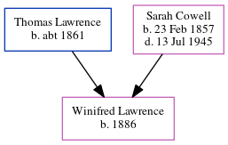

Mary Jane Horn (née Wood) 1866 -
[ Home ] | [ Calendar ] | [ Surnames Index ] | [ Errors ] | [ Family History ]Mary Wood, the wife of Harry Horn (the great-great-uncle of Nigel Horne), was born in Great Bookham, Surrey, England on 4 Oct 18661 andhad 6 children, Henry Lewis, Florence A, Alice M, Ethel M, Albert Victor and Arthur.
During her life, she was living at Bush Hill, Edmonton, London, England on 5 Apr 18911; at Jackson Road, East Barnet (Herts), Hertfordshire, England in 19013; at Jackson Road, Barnet, London on 31 Mar 19014; at 15 Liverpool Lawn, Ramsgate, Kent, England on 2 Apr 19115; and at 19 Palace Street, Canterbury, Kent in 19182.
Children
- Henry Lewis was born c. Nov 1888
- Florence A was born in 1890
- Alice M was born in 1893
- Ethel M was born in 1896
- Arthur was born on 28 Aug 1901
Citations
- 1891 England, Wales & Scotland Census - Findmypast (was age 24 and the wife of the head of the household)
- From son (Henry Lewis Horne) death notice in CWGC
- 1901 England, Wales & Scotland Census - Findmypast
- 1901 England, Wales & Scotland Census - Findmypast (was age 34 and the wife of the head of the household)
- 1911 Census for England & Wales - Findmypast (was age 44 and the wife of the head of the household)
- 1901 England, Wales & Scotland Census - Findmypast (was age 34 and the wife of the head of the household)
Family Tree
Map
Generated by ged2site. Last updated on Jul 3, 2024